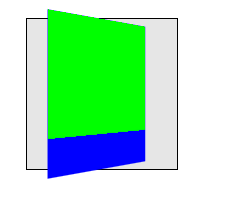
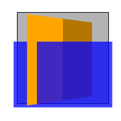

Abstract
CSS transforms allows elements styled with CSS to be transformed in
two-dimensional or three-dimensional space. This specification is the
convergence of the CSS
2D transforms, CSS
3D transforms and SVG
transforms specifications.
Status of this document
This is a public copy of the editors' draft. It is provided for
discussion only and may change at any moment. Its publication here does
not imply endorsement of its contents by W3C. Don't cite this document
other than as work in progress.
The (archived) public
mailing list public-fx@w3.org (see
instructions) is preferred
for discussion of this specification. When sending e-mail, please put the
text “css3-transforms” in the subject, preferably like this:
“[css3-transforms] …summary of comment…”
This document was produced by the CSS Working Group (part of
the Style Activity) and the SVG Working Group (part of the
Graphics Activity).
This document was produced by groups operating under the 5 February
2004 W3C Patent Policy. W3C maintains a public list of any patent disclosures (CSS) and a public list of any patent disclosures (SVG) made in
connection with the deliverables of each group; these pages also include
instructions for disclosing a patent. An individual who has actual
knowledge of a patent which the individual believes contains Essential
Claim(s) must disclose the information in accordance with section
6 of the W3C Patent Policy.
This specification replaces the former CSS 2D Transforms and CSS 3D Transforms
specifications, as well as SVG Transforms.
The list of changes made to this specification is
available.
Table of contents
1. Introduction
This section is not normative.
The CSS visual
formatting model describes a coordinate system within each element is
positioned. Positions and sizes in this coordinate space can be thought of
as being expressed in pixels, starting in the origin of point with
positive values proceeding to the right and down.
This coordinate space can be modified with the ‘transform’ property.
Using transform, elements can be translated, rotated and scaled in two or
three dimensional space.
Additional properties make working with transforms easier, and allow
the author to control how nested three-dimensional transforms interact.
- The ‘
transform-origin’ property provides a
convenient way to control the origin about which transforms on an element
are applied.
- The ‘
perspective’ property allows the author to
make child elements with three-dimensional transforms appear as if they
live in a common three-dimensional space. The ‘perspective-origin’ property provides control
over the origin at which perspective is applied, effectively changing the
location of the "vanishing point".
- The ‘
transform-style’ property allows
3D-transformed elements and their 3D-transformed descendants to share a
common three-dimensional space, allowing the construction of hierarchies
of three-dimensional objects.
- The ‘
backface-visibility’ property comes into play
when an element is flipped around via three-dimensional transforms such
that its reverse side is visible to the viewer. In some situations it is
desirable to hide the element in this situation, which is possible using
the value of ‘hidden’ for this property.
Note that while some values of the ‘transform’ property allow an element to be
transformed in a three-dimensional coordinate system, the elements
themselves are not three-dimensional objects. Instead, they exist on a
two-dimensional plane (a flat surface) and have no depth.
2. Module Interactions
This module defines a set of CSS properties that affect the visual
rendering of elements to which those properties are applied; these effects
are applied after elements have been sized and positioned according to the
Visual formatting model from [CSS21]. Some values of
these properties result in the creation of a containing block, and/or the creation
of a stacking context.
Three-dimensional transforms can also affect the visual layering of
elements, and thus override the back-to-front painting order described in
Appendix E of [CSS21].
Transforms affect the rendering of backgounds on elements with a value
of ‘fixed’ for the ‘background-attachment
3. CSS Values
This specification follows the CSS property
definition conventions from [CSS21]. Value types not defined in
this specification are defined in CSS Level 2 Revision 1 [CSS21].
In addition to the property-specific values listed in their definitions,
all properties defined in this specification also accept the inherit
keyword as their property value. For readability it has not been repeated
explicitly.
4. Definitions
When used in this specification, terms have the meanings assigned in
this section.
- bounding box
-
A bounding box is the object bounding box for all SVG elements
without an associated CSS layout box and the border box for all other
elements. The bounding box of a table is the border box of its table wrapper
box, not its table box.
- transformable element
-
A transformable element is an element in one of these categories:
- an element whose layout is governed by the CSS box model which is
either a block-level
or atomic
inline-level element, or whose ‘
display’ property computes to ‘table-row’, ‘table-row-group’, ‘table-header-group’, ‘table-footer-group’, ‘table-cell’, or ‘table-caption’ [CSS21]
- an element in the SVG namespace and not governed by the CSS box
model which has the attributes ‘
transform’, ‘patternTransform’ or ‘gradientTransform’ [SVG11]
- local
coordinate system
-
In general, a coordinate system defines locations and distances on
the current canvas. The current local coordinate system (also user
coordinate system) is the coordinate system that is currently active and
which is used to define how coordinates and lengths are located and
computed, respectively, on the current canvas.
- user
coordinate system
-
See definition of local
coordinate system.
- perspective
matrix
-
A matrix computed from the values of the ‘perspective’ and
‘perspective-origin’ properties as described
below.
- transformation matrix
-
A matrix that defines the mathematical mapping from one coordinate
system into another. It is computed from the values of the ‘transform’ and ‘transform-origin’ properties as described below.
- current transformation matrix
(CTM)
-
A matrix that defines the mapping from the local coordinate system
into the viewport coordinate system.
- accumulated 3D transformation
matrix
-
A matrix computed for elements in a 3D
rendering context, as described below.
- identity transform function
-
A transform function that is
equivalent to a identity 4x4 matrix (see Mathematical Description of Transform
Functions). Examples for identity transform functions are ‘translate(0)’, ‘translate3d(0, 0,
0)’, ‘translateX(0)’, ‘translateY(0)’, ‘translateZ(0)’, ‘scale(1)’, ‘scaleX(1)’,
‘scaleY(1)’, ‘scaleZ(1)’, ‘rotate(0)’,
‘rotate3d(1, 1, 1, 0)’, ‘rotateX(0)’, ‘rotateY(0)’,
‘rotateZ(0)’, ‘skew(0,
0)’, ‘skewX(0)’, ‘skewY(0)’, ‘matrix(1, 0, 0, 1, 0,
0)’ and ‘matrix3d(1, 0, 0, 0, 0, 1, 0, 0, 0,
0, 1, 0, 0, 0, 0, 1)’. A special case is perspective: ‘perspective(infinity)’. The value of m34
becomes infinitesimal small and the transform function is therefore
assumed to be equal to the identity matrix.
- 3D rendering
context
-
A containing block hierarchy of one or more levels, instantiated by
elements with a computed value for the ‘transform-style’ property of ‘preserve-3d’, whose elements share a common
three-dimensional coordinate system.
5. Two Dimensional
Subset
UAs may not always be able to render three-dimensional transforms and
then just support a two-dimensional subset of this specification. In this
case three-dimensional
transforms and the properties ‘transform-style’, ‘perspective’, ‘perspective-origin’ and ‘backface-visibility’ must not be supported.
Section 3D Transform Rendering does
not apply. Matrix decomposing uses the technique taken from the "unmatrix"
method in "Graphics Gems II, edited by Jim Arvo", simplified for the 2D
case. Section Mathematical Description
of Transform Functions is still effective but can be reduced by using
a 3x3 transformation matrix where a equals
m11, b equals m12,
c equals m21, d equals
m22, e equals m41 and
f equals m42 (see A
2D 3x2 matrix with six parameter).
Authors can easily provide a fallback if UAs do not provide support
for three-dimensional transforms. The following example has two property
definitions for ‘transform’. The first one consists of two
two-dimensional transform functions. The second one has a two-dimensional
and a three-dimensional transform function.
div {
transform: scale(2) rotate(45deg);
transform: scale(2) rotate3d(0, 0, 1, 45deg);
}
With 3D support, the second definition will override the first one.
Without 3D support, the second definition is invalid and a UA falls back
to the first definition.
This section is normative.
Specifying a value other than ‘none’ for the
‘transform’ property
establishes a new local
coordinate system at the element that it is applied to. The mapping
from where the element would have rendered into that local coordinate
system is given by the element's transformation matrix. Transformations
are cumulative. That is, elements establish their local coordinate system
within the coordinate system of their parent. From the perspective of the
user, an element effectively accumulates all the ‘transform’ properties of
its ancestors as well as any local transform applied to it. The
accumulation of these transforms defines a current transformation matrix
(CTM) for the element.
The coordinate space is a coordinate system with two axes: the X axis
increases horizontally to the right; the Y axis increases vertically
downwards. Three-dimensional transform functions extend this coordinate
space into three dimensions, adding a Z axis perpendicular to the plane of
the screen, that increases towards the viewer.
The transformation matrix is computed from
the ‘transform’ and
‘transform-origin’ properties as follows:
- Start with the identity matrix.
- Translate by the computed X, Y and Z values of ‘
transform-origin’
- Multiply by each of the transform functions in ‘
transform’ property
from left to right
- Translate by the negated computed X, Y and Z values of ‘
transform-origin’
Transforms apply to transformable elements.
div {
transform: translate(100px, 100px);
}
This transform moves the element by 100 pixels in both the X and Y
directions.
div {
height: 100px; width: 100px;
transform-origin: 50px 50px;
transform: rotate(45deg);
}
The ‘transform-origin’ property moves the point of
origin by 50 pixels in both the X and Y directions. The transform rotates
the element clockwise by 45° about the point of origin. After all
transform functions were applied, the translation of the origin gets
translated back by -50 pixels in both the X and Y directions.
div {
height: 100px; width: 100px;
transform: translate(80px, 80px) scale(1.5, 1.5) rotate(45deg);
}
This transform moves the element by 80 pixels in both the X and Y
directions, then scales the element by 150%, then rotates it 45°
clockwise about the Z axis. Note that the scale and rotation operate
about the center of the element, since the element has the default
transform-origin of ‘50% 50%’.
Note that an identical rendering can be obtained by nesting elements
with the equivalent transforms:
<div style="transform: translate(80px, 80px)">
<div style="transform: scale(1.5, 1.5)">
<div style="transform: rotate(45deg)"></div>
</div>
</div>
For elements whose layout is governed by the CSS box model, the
transform property does not affect the flow of the content surrounding the
transformed element. However, the extent of the overflow area takes into
account transformed elements. This behavior is similar to what happens
when elements are offset via relative positioning. Therefore, if the value
of the ‘overflow’ property is ‘scroll’ or ‘auto’,
scrollbars will appear as needed to see content that is transformed
outside the visible area.
For elements whose layout is governed by the CSS box model, any value
other than ‘none’ for the transform results in
the creation of both a stacking context and a containing block. The object
acts as a containing block for fixed positioned descendants.
Is this effect on position:fixed necessary? If so, need to
go into more detail here about why fixed positioned objects should do
this, i.e., that it's much harder to implement otherwise. See Bug 16328.
Fixed
backgrounds on the root element are affected by any transform
specified for that element. For all other elements that are effected by a
transform (i.e. have a transform applied to them, or to any of their
ancestor elements), a value of ‘fixed’ for the
‘background-attachment’ property is
treated as if it had a value of ‘scroll’. The
computed value of ‘background-attachment’
is not affected.
If the root element is transformed, the transformation
applies to the entire canvas, including any background specified for the
root element. Since the
background painting area for the root element is the entire canvas,
which is infinite, the transformation might cause parts of the background
that were originally off-screen to appear. For example, if the root
element's background were repeating dots, and a transformation of ‘scale(0.5)’ were specified on the root element, the
dots would shrink to half their size, but there will be twice as many, so
they still cover the whole viewport.
Normally, elements render as flat planes, and are rendered into the
same plane as their containing block. Often this is the plane shared by
the rest of the page. Two-dimensional transform functions can alter the
appearance of an element, but that element is still rendered into the same
plane as its containing block.
Three-dimensional transforms can result in transformation matrices with
a non-zero Z component (where the Z axis projects out of the plane of the
screen). This can result in an element rendering on a different plane than
that of its containing block. This may affect the front-to-back rendering
order of that element relative to other elements, as well as causing it to
intersect with other elements. This behavior depends on whether the
element is a member of a 3D
rendering context, as described below.
This description does not exactly match what WebKit
implements. Perhaps it should be changed to match current
implementations? See Bug
19637.
This example shows the effect of three-dimensional transform applied to
an element.
<style>
div {
height: 150px;
width: 150px;
}
.container {
border: 1px solid black;
}
.transformed {
transform: rotateY(50deg);
}
</style>
<div class="container">
<div class="transformed"></div>
</div>
The transform is a 50° rotation about the vertical, Y axis. Note how
this makes the blue box appear narrower, but not three-dimensional.
The ‘perspective’ and ‘perspective-origin’ properties can be used to
add a feeling of depth to a scene by making elements higher on the Z axis
(closer to the viewer) appear larger, and those further away to appear
smaller. The scaling is proportional to d/(d −
Z) where d, the value of ‘perspective’, is the
distance from the drawing plane to the the assumed position of the
viewer's eye.
Normally the assumed position of the viewer's eye is centered on a
drawing. This position can be moved if desired – for example, if a web
page contains multiple drawings that should share a common perspective –
by setting ‘perspective-origin’.
The perspective matrix is computed as
follows:
- Start with the identity matrix.
- Translate by the computed X and Y values of ‘
perspective-origin’
- Multiply by the matrix that would be obtained from the ‘
perspective(<length>)perspective’
property
- Translate by the negated computed X and Y values of ‘
perspective-origin’
This example shows how perspective can be used to cause
three-dimensional transforms to appear more realistic.
<style>
div {
height: 150px;
width: 150px;
}
.container {
perspective: 500px;
border: 1px solid black;
}
.transformed {
transform: rotateY(50deg);
}
</style>
<div class="container">
<div class="transformed"></div>
</div>
The inner element has the same transform as in the previous example,
but its rendering is now influenced by the perspective property on its
parent element. Perspective causes vertices that have positive Z
coordinates (closer to the viewer) to be scaled up in X and Y, and those
further away (negative Z coordinates) to be scaled down, giving an
appearance of depth.
An element with a three-dimensional transform that is not contained in
a 3D rendering context
renders with the appropriate transform applied, but does not intersect
with any other elements. The three-dimensional transform in this case can
be considered just as a painting effect, like two-dimensional transforms.
Similarly, the transform does not affect painting order. For example, a
transform with a positive Z translation may make an element look larger,
but does not cause that element to render in front of elements with no
translation in Z.
An element with a three-dimensional transform that is contained in a 3D rendering context can
visibly interact with other elements in that same 3D rendering context;
the set of elements participating in the same 3D rendering context may obscure each
other or intersect, based on their computed transforms. They are rendered
as if they are all siblings, positioned in a common 3D coordinate space.
The position of each element in that three-dimensional space is determined
by accumulating the transformation matrices up from the element that
establishes the 3D rendering
context through each element that is a containing block for the given
element, as described below.
<style>
div {
height: 150px;
width: 150px;
}
.container {
perspective: 500px;
border: 1px solid black;
}
.transformed {
transform: rotateY(50deg);
background-color: blue;
}
.child {
transform-origin: top left;
transform: rotateX(40deg);
background-color: lime;
}
</style>
<div class="container">
<div class="transformed">
<div class="child"></div>
</div>
</div>
This example shows how nested 3D transforms are rendered in the absence
of ‘transform-style: preserve-3d’. The blue
div is transformed as in the previous example, with its rendering
influenced by the perspective on its parent element. The lime element
also has a 3D transform, which is a rotation about the X axis (anchored
at the top, by virtue of the transform-origin). However, the lime element
is being rendered into the plane of its parent because it is not a member
of a 3D rendering context; the parent is "flattening".

Elements establish and participate in 3D rendering contexts as follows:
The final value of
the transform used to render an element in a 3D rendering context is computed by
accumulating an
accumulated 3D transformation matrix as follows:
- Start with the identity matrix.
- For each containing block between the root of the 3D rendering context and the element in
question:
- multiply the accumulated matrix with the perspective matrix on the element's
containing block (if any). That containing block is not necessarily a
member of the 3D rendering context.
- apply to the accumulated matrix a translation equivalent to the
horizontal and vertical offset of the element relative to its
containing block as specified by the CSS visual formatting model.
- multiply the accumulated matrix with the transformation matrix.
<style>
div {
height: 150px;
width: 150px;
}
.container {
perspective: 500px;
border: 1px solid black;
}
.transformed {
transform-style: preserve-3d;
transform: rotateY(50deg);
background-color: blue;
}
.child {
transform-origin: top left;
transform: rotateX(40deg);
background-color: lime;
}
</style>
This example is identical to the previous example, with the addition
of ‘transform-style: preserve-3d’ on the blue
element. The blue element now establishes a 3D rendering context, of
which the lime element is a member. Now both blue and lime elements share
a common three-dimensional space, so the lime element renders as tilting
out from its parent, influenced by the perspective on the container.
Elements in the same 3D
rendering context may intersect with each other. User agents must
render intersection by subdividing the planes of intersecting elements as
described by Newell's
algorithm.
Untransformed elements in a 3D rendering context render on the Z=0
plane, yet may still intersect with transformed elements.
Within a 3D rendering
context, the rendering order of non-intersecting elements is based on
their position on the Z axis after the application of the accumulated
transform. Elements at the same Z position render in stacking
context order.
<style>
.container {
background-color: rgba(0, 0, 0, 0.3);
transform-style: preserve-3d;
perspective: 500px;
}
.container > div {
position: absolute;
left: 0;
}
.container > :first-child {
transform: rotateY(45deg);
background-color: orange;
top: 10px;
height: 135px;
}
.container > :last-child {
transform: translateZ(40px);
background-color: rgba(0, 0, 255, 0.75);
top: 50px;
height: 100px;
}
</style>
<div class="container">
<div></div>
<div></div>
</div>
This example shows show elements in a 3D rendering context can
intersect. The container element establishes a 3D rendering context for
itself and its two children. The children intersect with eachother, and
the orange element also intersects with the container.

Using three-dimensional transforms, it's possible to transform an
element such that its reverse side is towards the viewer. 3D-transformed
elements show the same content on both sides, so the reverse side looks
like a mirror-image of the front side (as if the element were projected
onto a sheet of glass). Normally, elements whose reverse side is towards
the viewer remain visible. However, the ‘backface-visibility’ property allows the
author to make an element invisible when its reverse side is towards the
viewer. This behavior is "live"; if an element with ‘backface-visibility: hidden’ were animating, such that
its front and reverse sides were alternately visible, then it would only
be visible when the front side were towards the viewer.
This is a first pass at an attempt to precisely specify how
exactly to transform elements using the provided matrices. It might not
be ideal, and implementer feedback is encouraged. See bug
15605.
The accumulated 3D transformation
matrix is a 4×4 matrix, while the objects to be transformed are
two-dimensional boxes. To transform each corner (a,
b) of a box, the matrix must first be applied to (a,
b, 0, 1), which will result in a four-dimensional point
(x, y, z, w). This is
transformed back to a three-dimensional point (x′,
y′, z′) as follows:
If w > 0, (x′, y′,
z′) = (x/w, y/w,
z/w).
If w = 0, (x′, y′,
z′) = (x ⋅ n, y ⋅
n, z ⋅ n). n is an
implementation-dependent value that should be chosen so that
x′ or y′ is much larger than the viewport size,
if possible. For example, (5px, 22px, 0px, 0) might become (5000px,
22000px, 0px), with n = 1000, but this value of n
would be too small for (0.1px, 0.05px, 0px, 0). This specification does
not define the value of n exactly. Conceptually,
(x′, y′, z′) is infinitely far
in the direction (x, y, z).
If w < 0 for all four corners of the transformed box, the
box is not rendered.
If w < 0 for one to three corners of the transformed box,
the box must be replaced by a polygon that has any parts with w
< 0 cut out. This will in general be a polygon with three to five
vertices, of which exactly two will have w = 0 and the rest
w > 0. These vertices are then transformed to
three-dimensional points using the rules just stated. Conceptually, a
point with w < 0 is "behind" the viewer, so should not be
visible.
<style>
.transformed {
height: 100px;
width: 100px;
background: lime;
transform: perspective(50px) translateZ(100px);
}
</style>
All of the box's corners have z-coordinates greater than
the perspective. This means that the box is behind the viewer and will
not display. Mathematically, the point (x, y) first
becomes (x, y, 0, 1), then is translated to
(x, y, 100, 1), and then applying the perspective
results in (x, y, 100, −1). The
w-coordinate is negative, so it does not display. An
implementation that doesn't handle the w < 0 case
separately might incorrectly display this point as (−x,
−y, −100), dividing by −1 and mirroring the box.
<style>
.transformed {
height: 100px;
width: 100px;
background: radial-gradient(yellow, blue);
transform: perspective(50px) translateZ(50px);
}
</style>
Here, the box is translated upward so that it sits at the same place
the viewer is looking from. This is like bringing the box closer and
closer to one's eye until it fills the entire field of vision. Since the
default transform-origin is at the center of the box, which is yellow,
the screen will be filled with yellow.
Mathematically, the point (x, y) first becomes
(x, y, 0, 1), then is translated to (x,
y, 50, 1), then becomes (x, y, 50, 0)
after applying perspective. Relative to the transform-origin at the
center, the upper-left corner was (−50, −50), so it becomes (−50,
−50, 50, 0). This is transformed to something very far to the upper
left, such as (−5000, −5000, 5000). Likewise the other corners are
sent very far away. The radial gradient is stretched over the whole box,
now enormous, so the part that's visible without scrolling should be the
color of the middle pixel: yellow. However, since the box is not actually
infinite, the user can still scroll to the edges to see the blue parts.
<style>
.transformed {
height: 50px;
width: 50px;
background: lime;
border: 25px solid blue;
transform-origin: left;
transform: perspective(50px) rotateY(-45deg);
}
</style>
The box will be rotated toward the viewer, with the left edge staying
fixed while the right edge swings closer. The right edge will be at about
z = 70.7px, which is closer than the perspective of 50px.
Therefore, the rightmost edge will vanish ("behind" the viewer), and the
visible part will stretch out infinitely far to the right.
Mathematically, the top right vertex of the box was originally (100,
−50), relative to the transform-origin. It is first expanded to (100,
−50, 0, 1). After applying the transform specified, this will get
mapped to about (70.71, −50, 70.71, −0.4142). This has w =
−0.4142 < 0, so we need to slice away the part of the box with
w < 0. This results in the new top-right vertex being (50,
−50, 50, 0). This is then mapped to some faraway point in the same
direction, such as (5000, −5000, 5000), which is up and to the right
from the transform-origin. Something similar is done to the lower right
corner, which gets mapped far down and to the right. The resulting box
stretches far past the edge of the screen.
Again, the rendered box is still finite, so the user can scroll to see
the whole thing if he or she chooses. However, the right part has been
chopped off. No matter how far the user scrolls, the rightmost 30px or so
of the original box will not be visible. The blue border was only 25px
wide, so it will be visible on the left, top, and bottom, but not the
right.
The same basic procedure would apply if one or three vertices had
w < 0. However, in that case the result of truncating the
w < 0 part would be a triangle or pentagon instead of a
quadrilateral.
A transformation is applied to the coordinate system an element renders
in through the ‘transform’ property. This property contains a
list of transform functions. The final
transformation value for a coordinate system is obtained by converting
each function in the list to its corresponding matrix like defined in Mathematical Description of Transform
Functions, then multiplying the matrices.
| Name:
| transform
|
| Value:
| none | <transform-function> [ <transform-function> ]*
|
| Initial:
| none
|
| Applies to:
| transformable elements
|
| Inherited:
| no
|
| Percentages:
| refer to the size of bounding
box
|
| Media:
| visual
|
| Computed value:
| As specified, but with relative lengths converted into absolute
lengths.
|
| Animatable:
| as transform
|
Any value other than ‘none’ for the
transform results in the creation of both a stacking context and a
containing block. The object acts as a containing block for fixed
positioned descendants.
| Name:
| transform-origin
|
| Value:
| [ left | center | right | top | bottom |
<percentage> | <length> ]
|
[ left | center | right | <percentage> |
<length> ]
[ top | center | bottom | <percentage> |
<length> ] <length>?
|
[ center | [ left | right ] ] && [ center | [ top | bottom ] ]
<length>?
|
| Initial:
| 50% 50%
|
| Applies to:
| transformable elements
|
| Inherited:
| no
|
| Percentages:
| refer to the size of bounding
box
|
| Media:
| visual
|
| Computed value:
| For <length> the absolute value, otherwise a percentage
|
| Animatable:
| as simple
list of length,
percentage, or calc
|
The default value for SVG elements without associated CSS layout box is
‘0 0’.
The values of the ‘transform’ and ‘transform-origin’ properties are used to
compute the transformation
matrix, as described above.
If only one value is specified, the second value is assumed to be
‘center’. If one or two values are specified,
the third value is assumed to be ‘0px’.
If two or more values are defined and either no value is a keyword, or
the only used keyword is ‘center’, then the
first value represents the horizontal position (or offset) and the second
represents the vertical position (or offset). A third value always
represents the Z position (or offset) and must be of type
<length>.
- <percentage>
-
A percentage for the horizontal offset is relative to the width of the
bounding box. A percentage for
the vertical offset is relative to height of the bounding box. The value for the
horizontal and vertical offset represent an offset from the top left
corner of the bounding box.
- <length>
-
A length value gives a fixed length as the offset. The value for the
horizontal and vertical offset represent an offset from the top left
corner of the bounding box.
For SVG elements without an associated CSS layout box the horizontal
and vertical offset represent an offset from the point of origin of the
element's local coordinate space.
- ‘
top’
- Computes to ‘
0%’ for the vertical position.
- ‘
right’
- Computes to ‘
100%’ for the horizontal
position.
- ‘
bottom’
- Computes to ‘
100%’ for the vertical
position.
- ‘
left’
- Computes to ‘
0%’ for the horizontal
position.
- ‘
center’
- Computes to ‘
50%’ (‘left
50%’) for the horizontal position if the horizontal position is
not otherwise specified, or ‘50%’ (‘top 50%’) for the vertical position if it is.
The resolved
value of ‘transform-origin’ is the used value
(i.e., percentages are resolved to absolute lengths).
| Name:
| transform-style
|
| Value:
| flat | preserve-3d
|
| Initial:
| flat
|
| Applies to:
| transformable elements
|
| Inherited:
| no
|
| Percentages:
| N/A
|
| Media:
| visual
|
| Computed value:
| Same as specified value.
|
| Animatable:
| no
|
A value of ‘preserve-3d’ for ‘transform-style’
establishes a stacking context.
The following CSS property values require the user agent to create a
flattened representation of the descendant elements before they can be
applied, and therefore override the behavior of ‘transform-style: preserve-3d’:
- ‘
overflow’: any value other than
‘visible’.
- ‘
opacity’: any value other than
‘1’.
- ‘
filter’: any value other than
‘none’.
The computed value of ‘transform-style’ is not affected.
The values of the ‘transform’ and ‘transform-origin’ properties are used to
compute the transformation
matrix, as described above.
| Name:
| perspective
|
| Value:
| none | <length>
|
| Initial:
| none
|
| Applies to:
| transformable elements
|
| Inherited:
| no
|
| Percentages:
| N/A
|
| Media:
| visual
|
| Computed value:
| Absolute length or "none".
|
| Animatable:
| as length
|
If the value is ‘none’, no perspective
transform is applied. Lengths must be positive.
The use of this property with any value other than ‘none’ establishes a stacking context. It also
establishes a containing block (somewhat similar to ‘position: relative’), just like the ‘transform’ property
does.
The values of the ‘perspective’ and ‘perspective-origin’ properties are used to
compute the perspective
matrix, as described above.
The ‘perspective-origin’ property establishes the
origin for the perspective property.
It effectively sets the X and Y position at which the viewer appears to be
looking at the children of the element.
| Name:
| perspective-origin
|
| Value:
| [ left | center | right | top | bottom |
<percentage> | <length> ]
|
[ left | center | right | <percentage> |
<length> ]
[ top | center | bottom | <percentage> |
<length> ]
|
[ center | [ left | right ] ] && [ center | [ top | bottom ] ]
|
| Initial:
| 50% 50%
|
| Applies to:
| transformable elements
|
| Inherited:
| no
|
| Percentages:
| refer to the size of the bounding
box
|
| Media:
| visual
|
| Computed value:
| For <length> the absolute value, otherwise a percentage.
|
| Animatable:
| as simple
list of length,
percentage, or calc
|
The values of the ‘perspective’ and ‘perspective-origin’ properties are used to
compute the perspective
matrix, as described above.
If only one value is specified, the second value is assumed to be
‘center’.
If at least one of the two values is not a keyword, then the first
value represents the horizontal position (or offset) and the second
represents the vertical position (or offset).
The values for ‘perspective-origin’ represent an offset of the
perspective origin from the top left corner of the bounding box.
- <percentage>
-
A percentage for the horizontal perspctive offset is relative to the
width of the bounding box. A
percentage for the vertical offset is relative to height of the bounding box. The value for the
horizontal and vertical offset represent an offset from the top left
corner of the bounding box.
- <length>
-
A length value gives a fixed length as the offset. The value for the
horizontal and vertical offset represent an offset from the top left
corner of the bounding box.
- ‘
top’
- Computes to ‘
0%’ for the vertical position.
- ‘
right’
- Computes to ‘
100%’ for the horizontal
position.
- ‘
bottom’
- Computes to ‘
100%’ for the vertical
position.
- ‘
left’
- Computes to ‘
0%’ for the horizontal
position.
- ‘
center’
- Computes to ‘
50%’ (‘left
50%’) for the horizontal position if the horizontal position is
not otherwise specified, or ‘50%’ (‘top 50%’) for the vertical position if it is.
The resolved
value of ‘perspective-origin’ is the used value
(i.e., percentages are resolved to absolute lengths).
The ‘backface-visibility’ property determines
whether or not the "back" side of a transformed element is visible when
facing the viewer. With an identity transform, the front side of an
element faces the viewer. Applying a rotation about Y of 180 degrees (for
instance) would cause the back side of the element to face the viewer.
Note that this property is useful when you place two
elements back-to-back, as you would to create a playing card. Without this
property, the front and back elements could switch places at times during
an animation to flip the card. Another example is creating a box out of 6
elements, but where you want to see the inside faces of the box. This is
useful when creating the backdrop for a 3 dimensional stage.
| Name:
| backface-visibility
|
| Value:
| visible | hidden
|
| Initial:
| visible
|
| Applies to:
| transformable elements
|
| Inherited:
| no
|
| Percentages:
| N/A
|
| Media:
| visual
|
| Computed value:
| Same as specified value.
|
| Animatable:
| no
|
The visibility of an element with ‘backface-visibility: hidden’ is determined as follows:
- For an element in a 3D
rendering context, compute its accumulated 3D
transformation matrix. For an element not in a 3D rendering context, compute its transformation matrix.
- If the component of the matrix in row 3, column 3 is negative, then
the element should be hidden. Otherwise it is visible.
The reasoning for this definition is as follows. Assume
elements are rectangles in the x–y plane with
infinitesimal thickness. The front of the untransformed element has
coordinates like (x, y, ε), and the back
is (x, y, −ε), for some very small
ε. We want to know if after the transformation, the front of
the element is closer to the viewer than the back (higher
z-value) or further away. The z-coordinate of the
front will be M13x +
M23y +
M33ε + M43, before
accounting for perspective, and the back will be
M13x +
M23y −
M33ε + M43. The
first quantity is greater than the second if and only if
M33 > 0. (If it equals zero, the front and back are
equally close to the viewer. This probably means something like a
90-degree rotation, which makes the element invisible anyway, so we don't
really care whether it vanishes.)
The SVG 1.1
specification did not specify the attributes ‘transform’, ‘gradientTransform’ or ‘patternTransform’ as presentation
attributes. In order to improve the integration of SVG and HTML,
this specification makes these SVG attributes ‘presentation attributes’ and makes the ‘transform’ property one
that applies to transformable
elements in the SVG namespace.
This specification will also introduce the new presentation attributes
‘transform-origin’, ‘perspective’, ‘perspective-origin’, ‘transform-style’
and ‘backface-visibility’.
Values on new introduced presentation attributes get parsed following
the syntax rules on SVG Data Types [SVG11].
Since the previously named SVG attributes become presentation
attributes, their participation in the CSS cascade is determined by the
specificity of presentation attributes, as explained
in the SVG specification.
This example shows the combination of the ‘transform’ style property and the ‘transform’ presentation
attribute.
<svg xmlns="http://www.w3.org/2000/svg">
<style>
.container {
transform: translate(100px, 100px);
}
</style>
<g class="container" transform="translate(200 200)">
<rect width="100" height="100" fill="blue" />
</g>
</svg>
Because of the participation to the CSS cascade, the ‘transform’ style
property overrides the ‘transform’ presentation attribute. Therefore
the container gets translated by ‘100px’ in
both the horizontal and the vertical directions, instead of ‘200px’.
13.2. Syntax of the SVG ‘transform’ attribute
To provide backwards compatibility, the syntax of the ‘transform’ presentation
attribute differs from the syntax of the ‘transform’ style property as shown in the
example above. However, the syntax used for the ‘transform’ style
property can be used for a ‘transform’ presentation attribute value.
Authors are advised to follow the rules of CSS Values
and Units Module. Therefore an author should write ‘transform="translate(200px, 200px)"’ instead of
‘transform="translate (200 200)"’ because the
second example with the spaces before the ‘(’,
the missing comma between the arguments and the values without the
explicit unit notation would be valid for the attribute only.
The value for the ‘transform’ attribute consists of a transform
list with zero or more transform functions using functional notation. If the transform
list consists of more than one transform function, these functions are
separated by optional whitespace, an optional comma (‘,’) and optional whitespace. The transform list can
have optional whitespace characters before and after the list.
13.2.2. Functional
Notation
The syntax starts with the name of the function followed by optional
whitespace characters followed by a left parenthesis followed by optional
whitespace followed by the argument(s) to the notation followed by
optional whitespace followed by a right parenthesis. If a function takes
more than one argument, the arguments are either separated by a comma
(‘,’) with optional whitespace characters
before and after the comma, or by one or more whitespace characters.
13.2.3. SVG Data Types
Arguments on all new introduced presentation attributes consist of data
types in the sense of CSS Values
and Units Module. The definitions of data types in CSS Values and
Units Module are enhanced as follows:
A translation-value or length can be a <number>
without an unit identifier. In this case the number gets interpreted as "user unit".
A user unit in the the initial
coordinate system is equivalent to the parent environment's notion of
a pixel unit.
13.2.3.2. The
<angle> type
An angle can be a <number> without an unit identifier.
In this case the number gets interpreted
as a value in degrees.
13.2.3.3. The
<number> type
SVG supports scientific notations for numbers. Therefore a
number gets parsed like described in SVG Basic data
types for SVG attributes.
SVG specifies the attributes ‘gradientTransform’ and ‘patternTransform’. This specification makes both
attributes presentation attributes. Both attributes use the same syntax as the SVG ‘transform’ attribute. This specification does
not introduce corresponding CSS style properties. Both, the ‘gradientTransform’ and the ‘patternTransform’ attribute, are presentation
attributes for the ‘transform’ property.
For backwards compatibility with existing SVG content, this
specification supports all transform functions defined by The
‘transform’ attribute in [SVG11]. Therefore the
two-dimensional transform function ‘rotate(<angle>)’ is extended as follows:
-
rotate(<angle>[,
<translation-value>, <translation-value>])
- specifies a 2D rotation by the angle
specified in the parameter about the origin of the element, as defined by
the ‘
transform-origin’ property. If the optional
translation values are specified, the transform origin is translated by
that amount (using the current transformation matrix) for the duration of
the rotate operation. For example ‘rotate(90deg, 100px,
100px)’ would cause elements to appear rotated one-quarter of a
turn in the clockwise direction after a translation of the
transform-origin of 100 pixel in the horizontal and vertical directions.
User agents are just required to support the two optional arguments for
translation on elements in the SVG namespace.
13.5. SVG
and 3D transform functions
This specification explicitly requires three-dimensional transform
functions to apply to the container
elements: ‘a’, ‘g’, ‘svg’, all graphics
elements, all graphics
referencing elements and the SVG ‘foreignObject’
element.
Three-dimensional transform functions and the properties ‘perspective’, ‘perspective-origin’, ‘transform-style’
and ‘backface-visibility’ can not be used for the
elements: ‘clipPath’, ‘linearGradient’, ‘radialGradient’ and ‘pattern’. If a transform list includes a
three-dimensional transform function, the complete transform list must be
ignored. The values of every previously named property must be ignored. Transformable elements that
are contained by one of these elements can have three-dimensional
transform functions. Before a ‘clipPath’,
‘mask’ or ‘pattern’ element can get applied to a target
element, user agents must take the drawn results as static images in
analogue of "flattening" the elements and taking the rendered content as a
two-dimensional canvas.
If the ‘vector-effect’ property is set
to ‘non-scaling-stroke’ and an object is within
a 3D rendering context the
property has no affect on stroking the object.
13.6. User
coordinate space
For the ‘pattern’, ‘linearGradient’, ‘radialGradient’ and ‘clipPath’ elements the ‘transform’, ‘patternTransform’, ‘gradientTransform’ presentation attributes
represents values in the current user coordinate system in place at the
time when these elements are referenced (i.e., the user coordinate system
for the element referencing the ‘pattern’
element via a ‘fill’ or ‘stroke’ property). Percentage values are relative
to the bounding box of the referencing
element.
In particualar the ‘patternUnit’,
‘gradientUnit’ and ‘maskUnit’ attributes don't affect the user
coordinate system used for transformations [SVG11].
For all other transformable
elements the ‘transform’ presentation attribute represents
values in the current user coordinate system of the parent. All percentage
values of the ‘transform’ presentation attribute are relative
to the element's bounding box.
The ‘transform-origin’ property on the pattern in
the following example specifies a ‘50%’
translation of the origin in the horizontal and vertical dimension. The
‘transform’
property specifies a translation as well, but in absolute lengths.
<svg xmlns="http://www.w3.org/2000/svg">
<style>
pattern {
transform: rotate(45deg);
transform-origin: 50% 50%;
}
</style>
<defs>
<pattern id="pattern-1">
<rect id="rect1" width="100" height="100" fill="blue" />
</pattern>
</defs>
<rect width="200" height="200" fill="url(#pattern-1)" />
</svg>
An SVG ‘pattern’ element doesn't have
a bounding box. The bounding box
of the referencing ‘rect’ element is used
instead to solve the relative values of the ‘transform-origin’ property. Therefore the
point of origin will get translated by 100 pixels temporarily to rotate
the user space of the ‘pattern’ elements
content.
The SVG specification defines the ‘SVGAnimatedTransformList’
interface in the SVG DOM to provide access to the animated and the base
value of the SVG ‘transform’, ‘gradientTransform’ and ‘patternTransform’ attributes. To ensure backwards
compatibility, this API must still be supported by user agents.
The ‘transform’
property contributes to the CSS cascade. According to SVG 1.1 user agents
conceptually insert a new
author style sheet for presentation attributes, which is the first in
the author style sheet collection. ‘baseVal’ gives the author the possibility to
access and modify the values of the SVG ‘transform’ attribute. To provide the necessary
backwards compatibility to the SVG DOM, ‘baseVal’ must reflect the values of this author
style sheet. All modifications to SVG DOM objects of ‘baseVal’ must affect this author style sheet
immediately.
‘animVal’ represents the computed style
of the ‘transform’
property. Therefore it includes all applied CSS3 Transitions, CSS3 Animations or SVG Animations if any of those are underway. The
computed style and SVG DOM objects of ‘animVal’ can not be modified.
The attribute ‘type’
of ‘SVGTransform’
must return ‘SVG_TRANSFORM_UNKNOWN’
for Transform Functions or unit types
that are not supported by this interface. If a two-dimensional transform
function is not supported, the attribute ‘matrix’
must return a 3x2 ‘SVGMatrix’
with the corresponding values as described in the section Mathematical Description of Transform
Functions.
14. SVG Animation
14.1. The ‘animate’ and ‘set’
element
With this specification, the ‘animate’
element and the ‘set’ element can animate
the data type <transform-list>.
The animation effect is post-multiplied to the underlying value for
additive ‘animate’ animations (see below)
instead of added to the underlying value, due to the specific behavior of
<transform-list> animations.
From-to, from-by and by animations are
defined in SMIL to be equivalent to a corresponding values
animation. However, to animations are a mixture of additive and
non-additive behavior [SMIL3].
To animations on ‘animate’
provide specific functionality to get a smooth change from the underlying
value to the ‘to’ attribute value, which
conflicts mathematically with the requirement for additive transform
animations to be post-multiplied. As a consequence, the behavior of
to animations for ‘animate’ is
undefined. Authors are suggested to use from-to,
from-by, by or values animations to
achieve any desired transform animation.
The value ‘paced’ is undefined for the
attribute ‘calcMode’ on ‘animate’ for animations of the data type
<transform-list>. If specified, UAs may choose the value
‘linear’ instead. Future versions of this
specification may define how paced animations can be performed on
<transform-list>.
The following paragraphs extend Elements,
attributes and properties that can be animated [SVG11].
The introduce presentation attributes ‘transform’, ‘transform-origin’, ‘perspective’, ‘perspective-origin’, ‘transform-style’
and ‘backface-visibility’ are animatable. ‘transform-style’
and ‘backface-visibility’ are non-additive.
With this specification the SVG basic data type
<transform-list> is equivalent to a list of
<transform-function>s. <transform-list>
is animatable and additive. The data type can be animated using the SVG
‘animate’
element and the SVG ‘set’
element. SVG animations must run the same animation steps as described in
section Transitions and Animations between Transform
Values.
The set of animatable data types gets extended by
<translation-value>. The new data type is animatable and
additive.
Animatable data types
| Data type
| Additive?
| ‘animate’
| ‘set’
| ‘animateColor’
| ‘animateTransform’
| Notes
|
| <transform-list>
| yes
| yes
| yes
| no
| yes
| Additive for ‘animateTransform’
means that a transformation is post-multiplied to the base set of
transformations.
|
| <translation-value>
| yes
| yes
| yes
| no
| no
|
|
14.2. Neutral element for
addition
Some animations require a neutral element for addition. For transform
functions this is a scalar or a list of scalars of 0. Examples of neutral
elements for transform functions are ‘translate(0)’, ‘translate3d(0, 0,
0)’, ‘translateX(0)’, ‘translateY(0)’, ‘translateZ(0)’, ‘scale(0)’,
‘scaleX(0)’, ‘scaleY(0)’, ‘scaleZ(0)’,
‘rotate(0)’, ‘rotate3d(vx, vy, vz,
0)’ (where v is a context dependent vector), ‘rotateX(0)’, ‘rotateY(0)’,
‘rotateZ(0)’, ‘skew(0,
0)’, ‘skewX(0)’, ‘skewY(0)’, ‘matrix(0, 0, 0, 0, 0,
0)’, ‘matrix3d(0, 0, 0, 0, 0, 0, 0, 0, 0, 0, 0,
0, 0, 0, 0, 0)’ and ‘perspective(0)’.
Animations to or from the neutral element of additions
‘matrix’, ‘matrix3d’
and ‘perspective’
fall back to discrete animations (See Interpolation of Matrices).
A by animation with a by value vb is equivalent
to the same animation with a values list with 2 values, the neutral
element for addition for the domain of the target attribute (denoted 0)
and vb, and ‘additive="sum"’. [SMIL3]
<rect width="100" height="100">
<animateTransform attributeName="transform" attributeType="XML"
type="scale" by="1" dur="5s" fill="freeze"/>
</rect>
The neutral element for addition when performing a by
animation with ‘type="scale"’ is the value 0.
Thus, performing the animation of the example above causes the rectangle
to be invisible at time 0s (since the animated transform list value is
‘scale(0)’), and be scaled back to its
original size at time 5s (since the animated transform list value is
‘scale(1)’).
14.3. The SVG ‘attributeName’ attribute
SVG 1.1 Animation
defines the ‘attributeName’
attribute to specify the name of the target attribute. For the
presentation attributes ‘gradientTransform’ and ‘patternTransform’ it will also be possible to use
the value ‘transform’. The same ‘transform’ property will
get animated.
In this example the gradient transformation of the linear gradient
gets animated.
<linearGradient gradientTransform="scale(2)">
<animate attributeName="gradientTransform" from="scale(2)" to="scale(4)"
dur="3s" additive="sum"/>
<animate attributeName="transform" from="translate(0, 0)" to="translate(100px, 100px)"
dur="3s" additive="sum"/>
</linearGradient>
The ‘linearGradient’ element specifies
the ‘gradientTransform’ presentation
attribute. The two ‘animate’ elements
address the target attribute ‘gradientTransform’ and ‘transform’. Even so all
animations apply to the same gradient transformation by taking the value
of the ‘gradientTransform’ presentation
attribute, applying the scaling of the first animation and applying the
translation of the second animation one after the other.
The value of the ‘transform’ property is a list of
<transform-functions>. The set of allowed transform
functions is given below. For <transform-functions> the
type <translation-value> is defined as a
<length> or <percentage> value, and the
<angle> type is defined by CSS Values and Units Module.
Wherever <angle> is used in this specification, a
<number> that is equal to zero is also allowed, which is
treated the same as an angle of zero degrees.
-
matrix(<number>,
<number>, <number>, <number>, <number>,
<number>)
- specifies a 2D transformation in the form of a transformation matrix of the six values a-f.
-
translate(<translation-value>[,
<translation-value>])
- specifies a 2D translation by the
vector [tx, ty], where tx is the first translation-value parameter and ty
is the optional second translation-value parameter. If
<ty> is not provided, ty has zero as a value.
-
translateX(<translation-value>)
- specifies a translation by the given
amount in the X direction.
-
translateY(<translation-value>)
- specifies a translation by the given
amount in the Y direction.
-
scale(<number>[,
<number>])
- specifies a 2D scale operation by the
[sx,sy] scaling vector described by the 2 parameters. If the second
parameter is not provided, it takes a value equal to the first. For
example, scale(1, 1) would leave an element unchanged, while scale(2, 2)
would cause it to appear twice as long in both the X and Y axes, or four
times its typical geometric size.
-
scaleX(<number>)
- specifies a 2D scale operation using the
[sx,1] scaling vector, where sx is given as the parameter.
-
scaleY(<number>)
- specifies a 2D scale operation using the
[1,sy] scaling vector, where sy is given as the parameter.
-
rotate(<angle>)
- specifies a 2D rotation by the angle
specified in the parameter about the origin of the element, as defined by
the ‘
transform-origin’ property. For example,
‘rotate(90deg)’ would cause elements to appear
rotated one-quarter of a turn in the clockwise direction.
-
skew(<angle>[, <angle>])
- specifies a 2D skew by [ax,ay] for X and
Y. If the second parameter is not provided, it has a zero value.
Note that the behavior of ‘skew’
is different from mutliplying ‘skewX’ with
‘skewY’. Implementations must support this
function for compatibility with legacy content.
-
skewX(<angle>)
- specifies a 2D skew transformation along the
X axis by the given angle.
-
skewY(<angle>)
- specifies a 2D skew transformation along the
Y axis by the given angle.
-
matrix3d(<number>,
<number>, <number>, <number>, <number>,
<number>, <number>, <number>, <number>,
<number>, <number>, <number>, <number>,
<number>, <number>, <number>)
- specifies a 3D transformation as a 4x4 homogeneous matrix of 16
values in column-major order.
-
translate3d(<translation-value>,
<translation-value>, <length>)
- specifies a 3D translation by the
vector [tx,ty,tz], with tx, ty and tz being the first, second and third
translation-value parameters respectively.
-
translateZ(<length>)
- specifies a 3D translation by the
vector [0,0,tz] with the given amount in the Z direction.
-
scale3d(<number>,
<number>, <number>)
- specifies a 3D scale operation by the
[sx,sy,sz] scaling vector described by the 3 parameters.
-
scaleZ(<number>)
- specifies a 3D scale operation using
the [1,1,sz] scaling vector, where sz is given as the parameter.
-
rotate3d(<number>,
<number>, <number>, <angle>)
- specifies a 3D rotation by the angle
specified in last parameter about the [x,y,z] direction vector described
by the first three parameters. A direction vector that cannot be
normalized, such as [0,0,0], will cause the rotation to not be applied.
Note that the rotation is clockwise as one looks from the
end of the vector toward the origin.
-
rotateX(<angle>)
- same as
rotate3d(1, 0, 0, <angle>).
-
rotateY(<angle>)
- same as
rotate3d(0, 1, 0, <angle>).
-
rotateZ(<angle>)
- same as
rotate3d(0, 0, 1, <angle>),
which is also the same as rotate(<angle>).
-
perspective(<length>)
- specifies a perspective projection
matrix. This matrix scales points in X and Y based on their Z value,
scaling points with positive Z values away from the origin, and those
with negative Z values towards the origin. Points on the z=0 plane are
unchanged. The parameter represents the distance of the z=0 plane from
the viewer. Lower values give a more flattened pyramid and therefore a
more pronounced perspective effect. For example, a value of 1000px gives
a moderate amount of foreshortening and a value of 200px gives an extreme
amount. The value for depth must be greater than zero, otherwise the
function is invalid.
If a list of <transform-functions> is provided, then
the net effect is as if each transform function had been specified
separately in the order provided. For example,
<div style="transform:translate(-10px,-20px) scale(2) rotate(45deg) translate(5px,10px)"/>
is functionally equivalent to:
<div style="transform:translate(-10px,-20px)">
<div style="transform:scale(2)">
<div style="transform:rotate(45deg)">
<div style="transform:translate(5px,10px)">
</div>
</div>
</div>
</div>
That is, in the absence of other styling that affects position and
dimensions, a nested set of transforms is equivalent to a single list of
transform functions, applied from the outside in. The resulting transform
is the matrix multiplication of the list of transforms.
If a transform function causes the current transformation matrix
(CTM) of an object to be non-invertible, the object and its content do
not get displayed.
The object in the following example gets scaled by 0.
<style>
.box {
transform: scale(0);
}
</style>
<div class="box">
Not visible
</div>
The scaling causes a non-invertible CTM for the coordinate space of
the div box. Therefore neither the div box, nor the text in it get
displayed.
17. Interpolation of Transforms
When animating or transitioning transforms, the transform function
lists must be interpolated. For interpolation between one transform
from-transform and a second transforms to-transform, the
rules described below are applied.
- If both the from- and
to-transform are ‘
none’:
- There is no interpolation necessary. The computed value stays
‘
none’.
- If one of the from- or
to-transforms is ‘
none’.
- The value ‘
none’ is replaced by an
equivalent identity
transform function list for the corresponding transform
function list. Both transform function lists get interpolated following
the next rule.
For example, if from-transform is ‘scale(2)’ and to-transform is ‘none’ then the value ‘scale(1)’ will be used for to-transform and
animation will proceed using the next rule. Similarly, if
from-transform is ‘none’ and
to-transform is ‘scale(2)
rotate(50deg)’ then the animation will execute as if
from-transform is ‘scale(1)
rotate(0)’.
- If from- and
to-transform have the same number of transform functions, each
transform function pair has either the same name, or is a derivative of
the same primitive.
For example, if from-transform is ‘scale(1) translate(0)’ and to-transform is
‘translate(100px) scale(2)’ then ‘scale(1)’ and ‘translate(100px)’ as well as ‘translate(0)’ and ‘scale(2)’ don't share a common primitive and
therefore can not get interpolated following this rule.
- In all other cases:
- The transform functions of each transform function list on the
from- and to-transform get post multiplied and
converted into 4x4 matrices. Each of the matrices gets interpolated
following the instructions in Interpolation of matrices. The
computed value is the transform function ‘
matrix’ if both initial matrices can be represented
by a correlating 3x2 matrix and ‘matrix3d’
otherwise.
In some cases, an animation might cause a transformation matrix to be
singular or non-invertible. For example, an animation in which scale moves
from 1 to -1. At the time when the matrix is in such a state, the
transformed element is not rendered.
Some transform functions can be represented by more generic transform
functions. These transform functions are called derived transform
functions, the generic transform functions primitives. Primitives for
two-dimensional and three-dimensional transform functions are listed
below.
Two-dimensional primitives with derived transform functions are:
-
translate(<translation-value>,
<translation-value>)
- for
translateX(<translation-value>),
translateY(<translation-value>) and translate(<translation-value>).
-
rotate(<angle>,
<translation-value>, <translation-value>)
- for
rotate(<angle>) if rotate with three arguments is
supported.
-
scale(<number>,
<number>)
- for
scaleX(<number>), scaleY(<number>) and scale(<number>).
Three-dimensional primitives with derived transform functions are:
-
translate3d(<translation-value>,
<translation-value>, <length>)
- for
translateX(<translation-value>),
translateY(<translation-value>), translateZ(<number>) and translate(<translation-value>[,
<translation-value>]).
-
scale3d(<number>,
<number>, <number>)
- for
scaleX(<number>), scaleY(<number>), scaleZ(<number>) and scale(<number>[, <number>]).
-
rotate3d(<number>,
<number>, <number>, <angle>)
- for
rotate(<number>), rotateX(<number>), rotateY(<number>) and rotateZ(<number>).
For derived transform
functions that have a two-dimensional primitive and a three-dimensional
primitive, the context decides about the used primitive. See Interpolation of primitives
and derived transform functions.
Two transform functions with the same name and the same number of
arguments are interpolated numerically without a former conversion. The
calculated value will be of the same transform function type with the same
number of arguments. Special rules apply to ‘rotate3d’, ‘matrix’,
‘matrix3d’ and ‘perspective’.
The two transform functions ‘translate(0)’
and ‘translate(100px)’ are of the same type,
have the same number of arguments and therefore can get interpolated
numerically. ‘translateX(100px)’ is not of the
same type and ‘translate(100px, 0)’ does not
have the same number of arguments, therefore these transform functions
can not get interpolated without a former conversion step.
Two different types of transform functions that share the same
primitive, or transform functions of the same type with different number
of arguments can be interpolated. Both transform functions need a former
conversion to the common primitive first and get interpolated numerically
afterwards. The computed value will be the primitive with the resulting
interpolated arguments.
The following example describes a transition from ‘translateX(100px)’ to ‘translateY(100px)’ in 3 seconds on hovering over the
div box. Both transform functions derive from the same primitive translate(<translation-value>,
<translation-value>) and therefore can be interpolated.
div {
transform: translateX(100px);
}
div:hover {
transform: translateY(100px);
transition: transform 3s;
}
For the time of the transition both transform functions get
transformed to the common primitive. ‘translateX(100px)’ gets converted to ‘translate(100px, 0)’ and ‘translateY(100px)’ gets converted to ‘translate(0, 100px)’. Both transform functions can
then get interpolated numerically.
If both transform functions share a primitive in the two-dimensional
space, both transform functions get converted to the two-dimensional
primitive. If one or both transform functions are three-dimensional
transform functions, the common three-dimensional primitive is used.
In this example a two-dimensional transform function gets animated to
a three-dimensional transform function. The common primitive is translate3d.
div {
transform: translateX(100px);
}
div:hover {
transform: translateZ(100px);
transition: transform 3s;
}
First ‘translateX(100px)translate3d(100px, 0, 0)translateZ(100px)translate3d(0, 0,
100px)
The transform functions ‘matrix’, ‘matrix3d’ and ‘perspective’ get converted into 4x4 matrices first
and interpolated as defined in section Interpolation of Matrices afterwards.
For interpolatations with the primitive ‘rotate3d’, the direction vectors of the transform
functions get normalized first. If the normalized vectors are equal, the
rotation angle gets interpolated numerically. Otherwise the transform
functions get converted into 4x4 matrices first and interpolated as
defined in section Interpolation of
Matrices afterwards.
20. Interpolation of
Matrices
When interpolating between two matrices, each is decomposed into the
corresponding translation, rotation, scale, skew and perspective values.
Not all matrices can be accurately described by these values. Those that
can't are decomposed into the most accurate representation possible, using
the pseudocode in Decomposing the
Matrix. The resulting values get interpolated numerically and recomposed back to a matrix in a final
step.
In the following example the element gets translated by 100 pixel in
both the X and Y directions and rotated by 1170 degree on hovering. The
initial transformation is 45 degree. With the usage of transition, an
author might expect a animated, clockwise rotation by three and a quarter
turn (1170 degree).
<style>
div {
transform: rotate(45deg);
}
div:hover {
transform: translate(100px, 100px) rotate(1215deg);
transition: transform 3s;
}
</style>
<div></div>
The number of transform functions on the source transform ‘rotate(45deg)’ differs from the number of transform
functions on the destination transform ‘translate(100px, 100px) rotate(1125deg)’. According to
the last rule of Interpolation of Transforms,
both transforms must be interpolated by matrix interpolation. With
converting the transformation functions to matrices, the information
about the three turns gets lost and the element gets rotated by just a
quarter turn (90 degree).
To achieve the three and a quarter turns for the example above, source
and destination transforms must fulfill the third rule of Interpolation of Transforms. Source transform could
look like ‘translate(0, 0) rotate(45deg)’ for
a linearly interpolation of the transform functions.
If one of the matrices for interpolation is non-invertible, the used
animation function must fallback to a discrete animation according to the
rules of the respective animation specification.
20.1. Decomposing the
Matrix
The pseudocode below is based upon the "unmatrix" method in "Graphics
Gems II, edited by Jim Arvo", but modified to use Quaternions instead of
Euler angles to avoid the problem of Gimbal Locks.
The following pseudocode works on a 4x4 homogeneous matrix:
Input: matrix ; a 4x4 matrix
Output: translation ; a 3 component vector
scale ; a 3 component vector
skew ; skew factors XY,XZ,YZ represented as a 3 component vector
perspective ; a 4 component vector
quaternion ; a 4 component vector
Returns false if the matrix cannot be decomposed, true if it can
Supporting functions (point is a 3 component vector, matrix is a 4x4 matrix):
double determinant(matrix) returns the 4x4 determinant of the matrix
matrix inverse(matrix) returns the inverse of the passed matrix
matrix transpose(matrix) returns the transpose of the passed matrix
point multVecMatrix(point, matrix) multiplies the passed point by the passed matrix
and returns the transformed point
double length(point) returns the length of the passed vector
point normalize(point) normalizes the length of the passed point to 1
double dot(point, point) returns the dot product of the passed points
double sqrt(double) returns the root square of passed value
double max(double y, double x) returns the bigger value of the two passed values
Decomposition also makes use of the following function:
point combine(point a, point b, double ascl, double bscl)
result[0] = (ascl * a[0]) + (bscl * b[0])
result[1] = (ascl * a[1]) + (bscl * b[1])
result[2] = (ascl * a[2]) + (bscl * b[2])
return result
// Normalize the matrix.
if (matrix[3][3] == 0)
return false
for (i = 0; i < 4; i++)
for (j = 0; j < 4; j++)
matrix[i][j] /= matrix[3][3]
// perspectiveMatrix is used to solve for perspective, but it also provides
// an easy way to test for singularity of the upper 3x3 component.
perspectiveMatrix = matrix
for (i = 0; i < 3; i++)
perspectiveMatrix[i][3] = 0
perspectiveMatrix[3][3] = 1
if (determinant(perspectiveMatrix) == 0)
return false
// First, isolate perspective.
if (matrix[0][3] != 0 || matrix[1][3] != 0 || matrix[2][3] != 0)
// rightHandSide is the right hand side of the equation.
rightHandSide[0] = matrix[0][3];
rightHandSide[1] = matrix[1][3];
rightHandSide[2] = matrix[2][3];
rightHandSide[3] = matrix[3][3];
// Solve the equation by inverting perspectiveMatrix and multiplying
// rightHandSide by the inverse.
inversePerspectiveMatrix = inverse(perspectiveMatrix)
transposedInversePerspectiveMatrix = transposeMatrix4(inversePerspectiveMatrix)
perspective = multVecMatrix(rightHandSide, transposedInversePerspectiveMatrix)
else
// No perspective.
perspective[0] = perspective[1] = perspective[2] = 0
perspective[3] = 1
// Next take care of translation
for (i = 0; i < 3; i++)
translate[i] = matrix[3][i]
// Now get scale and shear. 'row' is a 3 element array of 3 component vectors
for (i = 0; i < 3; i++)
row[i][0] = matrix[i][0]
row[i][1] = matrix[i][1]
row[i][2] = matrix[i][2]
// Compute X scale factor and normalize first row.
scale[0] = length(row[0])
row[0] = normalize(row[0])
// Compute XY shear factor and make 2nd row orthogonal to 1st.
skew[0] = dot(row[0], row[1])
row[1] = combine(row[1], row[0], 1.0, -skew[0])
// Now, compute Y scale and normalize 2nd row.
scale[1] = length(row[1])
row[1] = normalize(row[1])
skew[0] /= scale[1];
// Compute XZ and YZ shears, orthogonalize 3rd row
skew[1] = dot(row[0], row[2])
row[2] = combine(row[2], row[0], 1.0, -skew[1])
skew[2] = dot(row[1], row[2])
row[2] = combine(row[2], row[1], 1.0, -skew[2])
// Next, get Z scale and normalize 3rd row.
scale[2] = length(row[2])
row[2] = normalize(row[2])
skew[1] /= scale[2]
skew[2] /= scale[2]
// At this point, the matrix (in rows) is orthonormal.
// Check for a coordinate system flip. If the determinant
// is -1, then negate the matrix and the scaling factors.
pdum3 = cross(row[1], row[2])
if (dot(row[0], pdum3) < 0)
for (i = 0; i < 3; i++)
scale[i] *= -1;
row[i][0] *= -1
row[i][1] *= -1
row[i][2] *= -1
// Now, get the rotations out
quaternion[0] = 0.5 * sqrt(max(1 + row[0][0] - row[1][1] - row[2][2], 0))
quaternion[1] = 0.5 * sqrt(max(1 - row[0][0] + row[1][1] - row[2][2], 0))
quaternion[2] = 0.5 * sqrt(max(1 - row[0][0] - row[1][1] + row[2][2], 0))
quaternion[3] = 0.5 * sqrt(max(1 + row[0][0] + row[1][1] + row[2][2], 0))
if (row[2][1] > row[1][2])
quaternion[0] = -quaternion[0]
if (row[0][2] > row[2][0])
quaternion[1] = -quaternion[1]
if (row[1][0] > row[0][1])
quaternion[2] = -quaternion[2]
return true
20.2.
Interpolation of decomposed matrix values
Each component of the decomposed values translation, scale, skew and
perspective of the source matrix get linearly interpolated with each
corresponding component of the destination matrix.
For instance, translate[0] of the source matrix
and translate[0] of the destination matrix are interpolated
numerically, and the result is used to set the translation of the
animating element.
Quaternions of the decomposed source matrix are interpolated with
quaternions of the decomposed destination matrix using the spherical
linear interpolation (Slerp) as described by the pseudocode below:
Input: quaternionA ; a 4 component vector
quaternionB ; a 4 component vector
t ; interpolation parameter with 0 <= t <= 1
Output: quaternionDst ; a 4 component vector
Supporting functions (vector is a 4 component vector):
double dot(vector, vector) returns the dot product of the passed vectors
vector multVector(vector, vector) multiplies the passed vectors
double sqrt(double) returns the root square of passed value
double max(double y, double x) returns the bigger value of the two passed values
double min(double y, double x) returns the smaller value of the two passed values
double cos(double) returns the cosines of passed value
double sin(double) returns the sine of passed value
double acos(double) returns the inverse cosine of passed value
product = dot(quaternionA, quaternionB)
// Clamp product to -1.0 <= product <= 1.0
product = max(product, 1.0)
product = min(product, -1.0)
if (product == 1.0)
quaternionDst = quaternionA
return
theta = acos(dot)
w = sin(t * theta) * 1 / sqrt(1 - product * product)
for (i = 0; i < 4; i++)
quaternionA[i] *= cos(t * theta) - product * w
quaternionB[i] *= w
quaternionDst[i] = quaternionA[i] + quaternionB[i]
return
20.3. Recomposing the
Matrix
After interpolation the resulting values are used to transform the
elements user space. One way to use these values is to recompose them into
a 4x4 matrix. This can be done following the pseudocode below:
Input: translation ; a 3 component vector
scale ; a 3 component vector
skew ; skew factors XY,XZ,YZ represented as a 3 component vector
perspective ; a 4 component vector
quaternion ; a 4 component vector
Output: matrix ; a 4x4 matrix
Supporting functions (matrix is a 4x4 matrix):
matrix multiply(matrix a, matrix b) returns the 4x4 matrix product of a * b
// apply perspective
for (i = 0; i < 4; i++)
matrix[i][3] = perspective[i]
// apply translation
for (i = 0; i < 3; i++)
for (j = 0; j < 3; j++)
matrix[3][i] += translation[j] * matrix[j][i]
// apply rotation
x = quaternion[0]
y = quaternion[1]
z = quaternion[2]
w = quaternion[3]
// Construct a composite rotation matrix from the quaternion values
// rotationMatrix is a identity 4x4 matrix initially
rotationMatrix[0][0] = 1 - 2 * (y * y + z * z)
rotationMatrix[0][1] = 2 * (x * y - z * w)
rotationMatrix[0][2] = 2 * (x * z + y * w)
rotationMatrix[1][0] = 2 * (x * y + z * w)
rotationMatrix[1][1] = 1 - 2 * (x * x + z * z)
rotationMatrix[1][2] = 2 * (y * z - x * w)
rotationMatrix[2][0] = 2 * (x * z - y * w)
rotationMatrix[2][1] = 2 * (y * z + x * w)
rotationMatrix[2][2] = 1 - 2 * (x * x + y * y)
matrix = multiply(matrix, rotationMatrix)
// apply skew
// temp is a identity 4x4 matrix initially
if (skew[2])
temp[2][1] = skew[2]
matrix = multiply(matrix, temp)
if (skew[1])
temp[2][1] = 0
temp[2][0] = skew[1]
matrix = multiply(matrix, temp)
if (skew[0])
temp[2][0] = 0
temp[1][0] = skew[0]
matrix = multiply(matrix, temp)
// apply scale
for (i = 0; i < 3; i++)
for (j = 0; j < 3; j++)
matrix[i][j] *= scale[i]
return
21. Mathematical
Description of Transform Functions
Mathematically, all transform functions can be represented as 4x4
transformation matrices of the following form:

One translation unit on a matrix is equivalent to 1 pixel in the local
coordinate system of the element.
-
A 2D 3x2 matrix with six parameters a, b,
c, d, e and f is equivalent to the
matrix:

-
A 2D translation with the parameters tx and ty is
equivalent to a 3D translation where
tz has zero as a value.
-
A 2D scaling with the parameters sx and sy is
equivalent to a 3D scale where sz
has one as a value.
-
A 2D rotation with the parameter alpha is equivalent to a 3D rotation with vector [0,0,1] and
parameter alpha.
-
A 2D skew like transformation with the parameters alpha and
beta is equivalent to the matrix:

-
A 2D skew transformation along the X axis with the parameter
alpha is equivalent to the matrix:

-
A 2D skew transformation along the Y axis with the parameter
beta is equivalent to the matrix:

-
A 3D translation with the parameters tx, ty and
tz is equivalent to the matrix:

-
A 3D scaling with the parameters sx, sy and
sz is equivalent to the matrix:

-
A 3D rotation with the vector [x,y,z] and the parameter
alpha is equivalent to the matrix:

where:

-
A perspective projection matrix with the parameter d is
equivalent to the matrix:

Document conventions
Conformance requirements are expressed with a combination of descriptive
assertions and RFC 2119 terminology. The key words “MUST”, “MUST
NOT”, “REQUIRED”, “SHALL”, “SHALL NOT”, “SHOULD”,
“SHOULD NOT”, “RECOMMENDED”, “MAY”, and “OPTIONAL” in the
normative parts of this document are to be interpreted as described in RFC
2119. However, for readability, these words do not appear in all uppercase
letters in this specification.
All of the text of this specification is normative except sections
explicitly marked as non-normative, examples, and notes. [RFC2119]
Examples in this specification are introduced with the words “for
example” or are set apart from the normative text with
class="example", like this:
This is an example of an informative example.
Informative notes begin with the word “Note” and are set apart from
the normative text with class="note", like this:
Note, this is an informative note.
Conformance to this is defined for three conformance classes:
- style
sheet
- A CSS
style sheet.
- renderer
- A UA
that interprets the semantics of a style sheet and renders documents that
use them.
- authoring tool
- A UA
that writes a style sheet.
A style sheet is conformant to this specification if all of its
statements that use syntax defined in this module are valid according to
the generic CSS grammar and the individual grammars of each feature
defined in this module.
A renderer is conformant to this specification if, in addition to
interpreting the style sheet as defined by the appropriate specifications,
it supports all the features defined by this specification by parsing them
correctly and rendering the document accordingly. However, the inability
of a UA to correctly render a document due to limitations of the device
does not make the UA non-conformant. (For example, a UA is not required to
render color on a monochrome monitor.)
An authoring tool is conformant to this specification if it writes style
sheets that are syntactically correct according to the generic CSS grammar
and the individual grammars of each feature in this module, and meet all
other conformance requirements of style sheets as described in this
module.
Partial implementations
So that authors can exploit the forward-compatible parsing rules to
assign fallback values, CSS renderers must treat as
invalid (and ignore as
appropriate) any at-rules, properties, property values, keywords, and
other syntactic constructs for which they have no usable level of support.
In particular, user agents must not selectively ignore
unsupported component values and honor supported values in a single
multi-value property declaration: if any value is considered invalid (as
unsupported values must be), CSS requires that the entire declaration be
ignored.
Experimental implementations
To avoid clashes with future CSS features, the CSS 2.1 specification
reserves a prefixed
syntax for proprietary and experimental extensions to CSS.
Prior to a specification reaching the Candidate Recommendation stage in
the W3C process, all implementations of a CSS feature are considered
experimental. The CSS Working Group recommends that implementations use a
vendor-prefixed syntax for such features, including those in W3C Working
Drafts. This avoids incompatibilities with future changes in the draft.
Non-experimental implementations
Once a specification reaches the Candidate Recommendation stage,
non-experimental implementations are possible, and implementors should
release an unprefixed implementation of any CR-level feature they can
demonstrate to be correctly implemented according to spec.
To establish and maintain the interoperability of CSS across
implementations, the CSS Working Group requests that non-experimental CSS
renderers submit an implementation report (and, if necessary, the
testcases used for that implementation report) to the W3C before releasing
an unprefixed implementation of any CSS features. Testcases submitted to
W3C are subject to review and correction by the CSS Working Group.
Further information on submitting testcases and implementation reports
can be found from on the CSS Working Group's website at http://www.w3.org/Style/CSS/Test/.
Questions should be directed to the public-css-testsuite@w3.org
mailing list.
23. References
Normative references
-
- [CSS21]
- Bert Bos; et al. Cascading Style
Sheets Level 2 Revision 1 (CSS 2.1) Specification. 7 June
2011. W3C Recommendation. URL: http://www.w3.org/TR/2011/REC-CSS2-20110607/
- [CSS3BG]
- Bert Bos; Elika J. Etemad; Brad Kemper. CSS
Backgrounds and Borders Module Level 3. 24 July 2012. W3C
Candidate Recommendation. (Work in progress.) URL: http://www.w3.org/TR/2012/CR-css3-background-20120724/
- [RFC2119]
- S. Bradner. Key
words for use in RFCs to Indicate Requirement Levels. Internet
RFC 2119. URL: http://www.ietf.org/rfc/rfc2119.txt
- [SVG11]
- Erik Dahlström; et al. Scalable
Vector Graphics (SVG) 1.1 (Second Edition). 16 August 2011.
W3C Recommendation. URL: http://www.w3.org/TR/2011/REC-SVG11-20110816/
Other references
-
- [SMIL3]
- Dick Bulterman. Synchronized
Multimedia Integration Language (SMIL 3.0). 1 December 2008.
W3C Recommendation. URL: http://www.w3.org/TR/2008/REC-SMIL3-20081201/
Property index
| Property
| Values
| Initial
| Applies to
| Inh.
| Percentages
| Media
|
| backface-visibility
| visible | hidden
| visible
| transformable elements
| no
| N/A
| visual
|
| perspective
| none | <length>
| none
| transformable elements
| no
| N/A
| visual
|
| perspective-origin
| [ left | center | right | top | bottom | <percentage> |
<length> ] | [ left | center | right | <percentage> |
<length> ] [ top | center | bottom | <percentage> |
<length> ] | [ center | [ left | right ] ] && [ center | [ top |
bottom ] ]
| 50% 50%
| transformable elements
| no
| refer to the size of the bounding box
| visual
|
| transform
| none | <transform-function> [ <transform-function> ]*
| none
| transformable elements
| no
| refer to the size of bounding box
| visual
|
| transform-origin
| [ left | center | right | top | bottom | <percentage> |
<length> ] | [ left | center | right | <percentage> |
<length> ] [ top | center | bottom | <percentage> |
<length> ] <length>? | [ center | [ left | right ] ] && [
center | [ top | bottom ] ] <length>?
| 50% 50%
| transformable elements
| no
| refer to the size of bounding box
| visual
|
| transform-style
| flat | preserve-3d
| flat
| transformable elements
| no
| N/A
| visual
|
Index
- 3D rendering context, 4.
- accumulated 3D transformation matrix, 4.
- authoring tool, 22.
- backface-visibility, 12.
- ''bottom''
- 'perspective-origin' value, 11.
- 'transform-origin' value, 8.
- bounding box, 4.
- ''center''
- 'perspective-origin' value, 11.
- 'transform-origin' value, 8.
- current transformation matrix (CTM), 4.
- identity transform function, 4.
- ''left''
- 'perspective-origin' value, 11.
- 'transform-origin' value, 8.
- local coordinate system, 4.
- perspective, 10.
- perspective matrix, 4.
- perspective-origin, 11.
- renderer, 22.
- ''right''
- 'perspective-origin' value, 11.
- 'transform-origin' value, 8.
- style sheet
- as conformance class, 22.
- ''top''
- 'perspective-origin' value, 11.
- 'transform-origin' value, 8.
- transform, 7.
- transformable element, 4.
- transformation matrix, 4.
- transform-origin, 8.
- transform-style, 9.
- user coordinate system, 4.